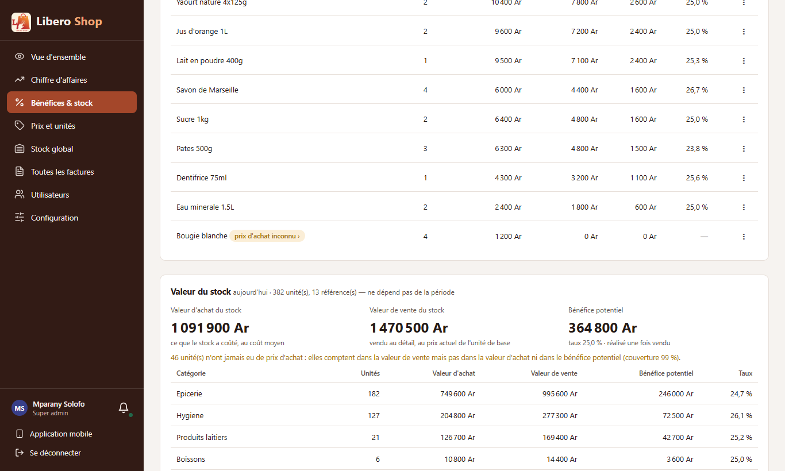
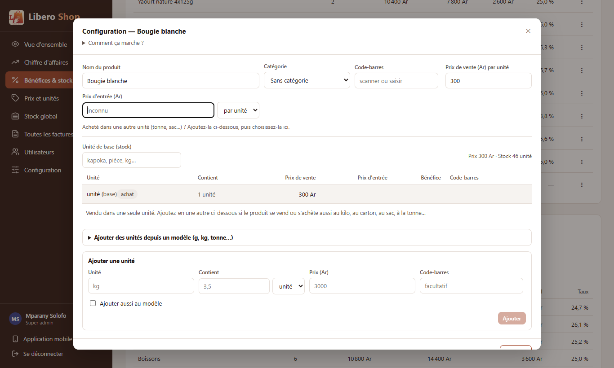

← Tous les comptes rendus de l'interface
UI-61Prix d'achat inconnu : le saisir depuis Bénéfices
Résumé
- Sur Bénéfices & stock, un produit vendu sans prix d'achat montre maintenant « prix d'achat inconnu › », qui se clique.
- Le clic ouvre la configuration du produit, avec le curseur déjà dans « Prix d'entrée ».
- Seuls ceux qui peuvent modifier le catalogue (administrateur, responsable de dépôt) ont le bouton ; les autres gardent le simple badge « partiel ».
- Le prix saisi compte pour les prochaines ventes : le coût d'une vente est figé le jour où elle est faite. Les ventes déjà faites restent sans coût ; c'est écrit dans l'info-bulle.
- Appliquer le prix aux ventes passées est une décision attendue, notée dans
docs/todo-ui.md.
1. Le problème
Le tableau « Bénéfice par produit » marquait « partiel » un produit vendu sans prix d'achat connu. On voyait le problème, mais pour le corriger il fallait aller dans Prix et unités, retrouver le produit, ouvrir sa configuration et chercher le bon champ.
2. Ce qui a été fait
Figure 1 — Le badge mène au champ à remplir ; le prix saisi vaut pour les ventes à venir.
La fenêtre de configuration est celle du menu « ⋮ ». On lui demande seulement de placer le curseur dans le prix d'entrée, une fois le prix actuel chargé. À la fermeture, la page relit ses chiffres.
3. Le résultat en images
Mparany — administrateur « Bougie blanche » a été vendue avant d'avoir un prix d'achat.

Figure 2 — Le badge cliquable à côté du nom du produit.

Figure 3 — La configuration s'ouvre, le curseur attend dans « Prix d'entrée ».
4. Ce qui reste à décider
La liste de travail disait « le bénéfice se recalcule à la fermeture ». Ce n'est vrai que pour les
ventes suivantes : la conception (
docs/CONCEPTION-prix-et-unites.md) fige le coût de chaque ligne de vente
(unitCost) le jour de la vente. Essai fait : après avoir saisi 200 Ar pour la bougie, sa ligne garde
« 0 Ar » de coût et le badge reste. Faut-il appliquer un prix saisi après coup aux ventes passées sans coût ?
Cela demande une modification du serveur ; la question est notée dans docs/todo-ui.md.5. Tableau récapitulatif
| Fichier | Changement |
|---|---|
ui/…/features/admin/margin.component.ts | badge cliquable pour qui peut modifier le catalogue ; info-bulle sur les ventes passées |
ui/…/core/catalog/product-rights.ts | une demande de fenêtre peut dire où placer le curseur (focus: 'cost') |
ui/…/shared/components/product-dialogs.component.ts | transmet cette demande à la configuration |
ui/…/shared/components/product-units-dialog.component.ts | curseur dans « Prix d'entrée » une fois le prix chargé, une seule fois |
ui/…/features/admin/margin.component.spec.ts | nouveau : tests de la page |
| Règle | Test |
|---|---|
| Le badge ouvre la configuration sur le prix d'entrée, pour l'administrateur | margin.component.spec.ts — « turns "prix d'achat inconnu" into a way to fill it in… » |
| Un compte qui ne peut pas modifier le prix garde « partiel » | margin.component.spec.ts — « only says "partiel"… » |
Tests : interface au vert (220 tests). Aucun changement côté serveur.